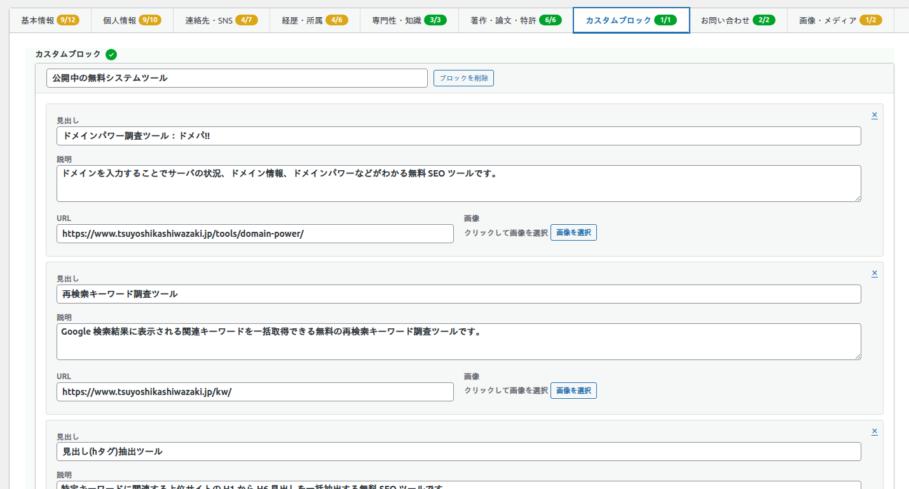
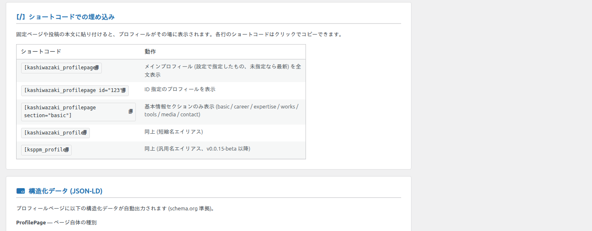
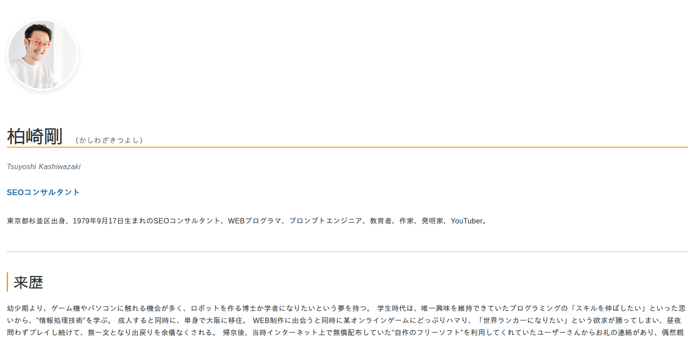

カスタムブロックとショートコード
標準の項目に当てはまらないコンテンツは「カスタムブロック」で追加でき、作成したプロフィールはショートコードで任意のページに埋め込めます。
カスタムブロック
「カスタムブロック」タブでは、「公開中の無料システムツール」「監修・共同開発システムツール」など、任意の名称のブロック を作成できます。各ブロックの中に、見出し・説明・URL・画像を持つ項目を繰り返し追加できます。

- 1 つのプロフィールに最大 20 ブロック、各ブロックに最大 50 項目まで追加できます。
- ツール紹介・ポートフォリオ・提供サービスなど、自由な用途で使えます。
以前のバージョンで「公開中のツール」「監修・共同開発ツール」として登録した内容は、カスタムブロックへ自動的に引き継がれます。
ショートコードでの埋め込み
固定ページや投稿の本文にショートコードを貼り付けると、プロフィールをその場に表示できます。3 つのエイリアス (別名) があり、どれも同じ機能です。

| ショートコード | 動作 |
|---|---|
[kashiwazaki_profilepage] | メインプロフィール (設定で指定したもの、未指定なら最新) を全文表示 |
[kashiwazaki_profilepage id="123"] | ID 指定のプロフィールを表示 |
[kashiwazaki_profilepage section="basic"] | 特定セクションのみ表示 |
[kashiwazaki_profilepage layout="page7_like"] | page7 風レイアウトで表示 |
[kashiwazaki_profile] | 同上 (短縮名エイリアス) |
[ksppm_profile] | 同上 (汎用名エイリアス) |
属性の一覧
| 属性 | 初期値 | 指定できる値 / 説明 |
|---|---|---|
id | 0 (＝設定のメインプロフィール、なければ最新) | 表示するプロフィールの投稿 ID |
section | all | all / basic / career / expertise / works / tools / media / contact |
layout | default | default / page7_like (表示順プリセット) |
id を省略すると、設定の「メインプロフィール」で指定したプロフィールが表示されます。指定がない場合は最新の公開プロフィールが使われます。
フロントでの表示
プロフィールページや埋め込み先では、顔写真・氏名・肩書・自己紹介・来歴などが整ったレイアウトで表示されます。
